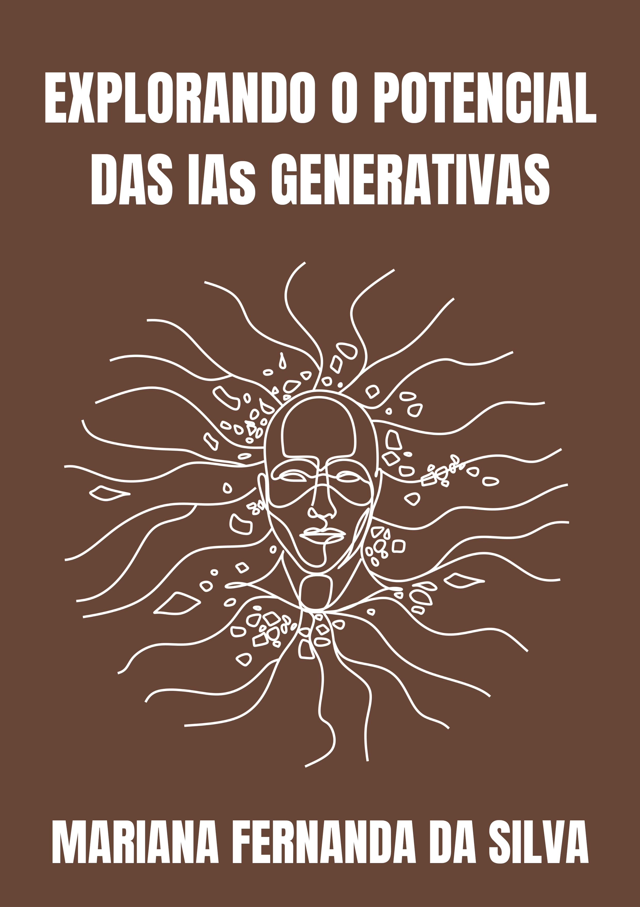
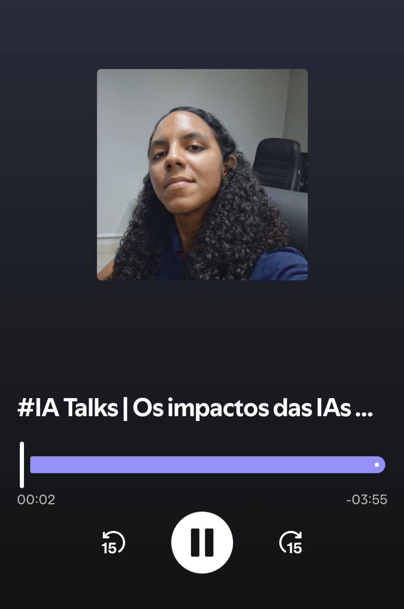
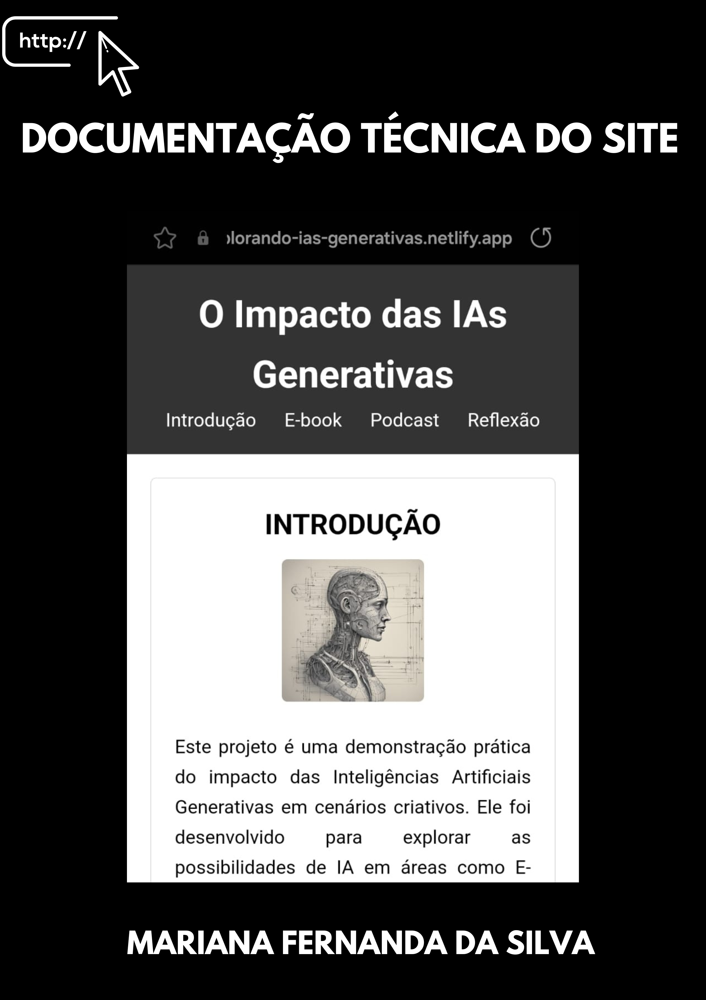

INTRODUÇÃO
Este projeto é uma demonstração prática do impacto das Inteligências Artificiais Generativas em cenários criativos. Ele foi desenvolvido para explorar as possibilidades de IA em áreas como E-books interativos e Podcasts narrados, mostrando seu potencial transformador.
Ao integrar tecnologias inovadoras como ChatGPT, DALL·E e ElevenLabs, criamos conteúdos realistas e funcionais que exemplificam como ideias podem se tornar produtos criativos e acessíveis.
E-BOOK
(Clique na imagem para obter acesso)
O E-book, intitulado "Explorando o Potencial das IAs Generativas", é um guia interativo que aborda as tendências tecnológicas do momento. Combinando textos gerados por IA com imagens criadas no DALL·E, ele oferece uma visão única sobre:
- Avanços Recentes: Um panorama sobre como redes neurais mais poderosas e o aumento do poder computacional permitiram a criação de modelos como o GPT e o DALL·E, capazes de gerar conteúdos realistas e sofisticados.
- Aplicações Práticas: Descubra como as IAs generativas estão revolucionando setores como arte, design, entretenimento e até mesmo marketing, permitindo que indivíduos e empresas alcancem novos patamares de criatividade e eficiência.
- Desafios Éticos e Técnicos: Uma reflexão crítica sobre as implicações dessas tecnologias, incluindo questões como viés algorítmico, direitos autorais e uso indevido de conteúdos gerados por IA, além de abordar as limitações técnicas como custos computacionais e treinamento contínuo.
Mais do que um simples guia, este E-book é uma celebração do impacto transformador das IAs generativas no mundo moderno. Com uma abordagem visual e informativa, ele convida o leitor a refletir sobre o equilíbrio entre as vastas oportunidades oferecidas por essas tecnologias e a responsabilidade de usá-las de maneira ética e sustentável. Ideal para curiosos, criativos e profissionais, este E-book demonstra que estamos apenas no início de uma revolução onde humanos e máquinas colaboram para moldar o futuro da criatividade, da inovação e do trabalho. Seja você um entusiasta da tecnologia ou um explorador das tendências modernas, este guia é uma porta de entrada essencial para o mundo fascinante das IAs generativas.
PODCAST
(Clique na imagem para obter acesso)
Além do E-book, criei um episódio de podcast narrado por IA utilizando a tecnologia ElevenLabs. O episódio apresenta:
- Insights sobre o impacto das IAs generativas nas indústrias criativas.
- Discussões sobre como essas tecnologias estão moldando o futuro do trabalho e da arte.
- Reflexões sobre a colaboração entre humanos e máquinas no processo criativo.
Essa abordagem mostrou como a narração por IA pode criar conteúdos envolventes e acessíveis, ampliando o alcance de ideias inovadoras.
REFLEXÃO
Desenvolver este projeto foi uma jornada inspiradora que revelou o poder das IAs Generativas. Embora as tecnologias utilizadas sejam incrivelmente avançadas, ficou claro que a criatividade humana continua sendo essencial para direcionar e moldar os resultados.
Essa experiência destacou que estamos apenas começando a explorar as possibilidades das IAs Generativas. Elas não apenas ampliam nossas capacidades criativas, mas também nos desafiam a repensar como colaboramos com tecnologias emergentes.
Este projeto é um exemplo de como ideias podem se transformar em produtos reais e funcionais, apontando para um futuro em que humanos e máquinas criem juntos.
ESTRUTURAÇÃO TÉCNICA DO SITE
(Clique na imagem para obter acesso)
Toda a parte da Estruturação técnica do desenvolvimento do site.